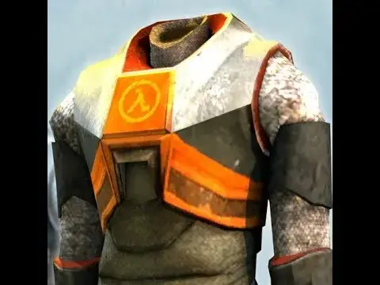

Mod
Half-Life HEV Suit
- Downloads
- 1,452
- Favourites
- 0
This mod displayed a profile-binding notice on Forge.

This is an early ALPHA version of the mod, I plan to continue working on it as long as I’m able but progress may be slow.
Working right now:
- Hud mostly works (suit counter uses tactical vest slot, tested with strandhogg).
- Taking damage will display the direction it came from and type (like bullets, barbed wire, fire, etc etc)
- Major injuries will play a voiceline and automatically inject a relevant stim like morphine (doesn’t need to be on your pmc)
- A crosshair shows where your bullets will hit in the world and highlight red when over a player/bot
- Flashlight, toggled with ‘J’ by default (configurable in settings)
- Picking up items in the world will display a notification icon on the right side
- Weapon selection will show an icon and ammo level of the weapon at the top
Version
0.1.2
SPT 4.0.3
Fika: unknown
686 downloads5.2 MB
v0.1.2 Fixes/Changes
- Fixed another bug where weapons that don’t use magazines could break the player’s ability to change weapons or interact with things
- HUD health counter will now correctly normalize non standard health values
- Rewrote sentence parser to be 10x faster
VirusTotal: report 1
Version
0.1.1
SPT 4.0.3
Fika: unknown
349 downloads5.2 MB
v0.1.1 Patch notes
Fixes/Changes
- Prevent death until total health reaches zero since the suit is packed with advanced armor and medical systems.
- Fixed a bug in the ammo counter component where weapons without magazines could break the player’s ability to change weapons or interact with things.
- Fixed a bug in the crosshair component where swapping weapons could cause a null reference exception.
- Fixed possible divide by zero in hud health/suitpower counters
Known Issues
- Ammo counter doesn’t update when single reloading certain weapons (SKS, shotguns, revolvers)
- Some voices lines are missing/incomplete
- Automatic stim when seriously injured may not work in some cases
VirusTotal: report 1
Version
0.1.0
SPT 4.0.3
Fika: unknown
417 downloads5.2 MB
This is the first public alpha version, please comment with any bugs/questions/concerns
VirusTotal: report 1